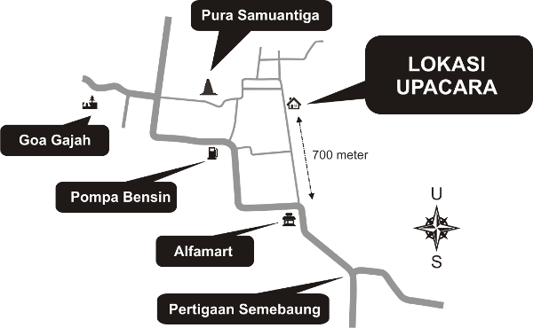

PAWIWAHAN
PERNIKAHAN
I Ketut Sandiarsa
Putra ketiga dari I Nyoman Rugitadengan
Ni Pt Ajeng Widhi K
Putri pertama dari I Gede Swadaya
Atas asung kertha wara nugraha Ida Sang Hyang Widhi Wasa,
kami mengharapkan kehadiran Bapak/Ibu/Saudara/Saudari di acara resepsi pernikahan kami pada:
Hari : Rabu, 1 April 2015
Jam : 11.00 WITA - Sampai selesai
Tempat : Br. Taman, Bedulu, Blahbatuh, Gianyar
Turut Mengundang:
Keluarga I Nyoman Rugita dan Keluarga I Gede Swadaya
LOKASI
 Tampilkan dalam Versi Google MapsTIMELINE
Loading...
KOMENTAR